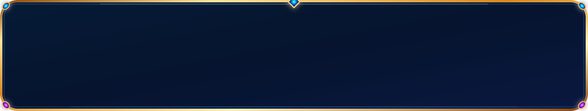
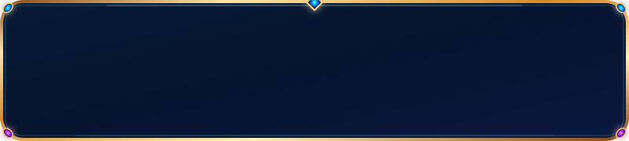
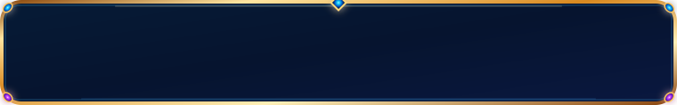
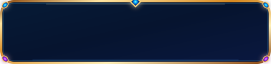
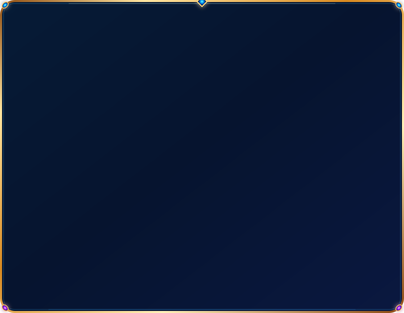
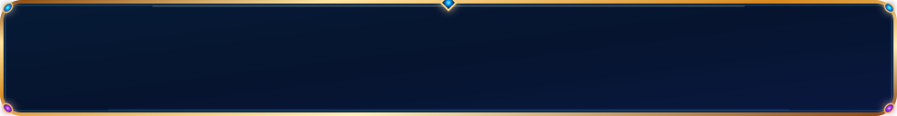

SÜKÛN r790 · Asset Kartları

card-wide.svg
Yapısal geniş kart

card-medium.svg
Orta kart
field.svg
Seçim / bilgi alanı
chip.svg
Durum / bağlam kapsülü

button-wide.svg
Ana CTA

button-small.svg
İkincil kontrol

panel-tall.svg
Seyir / ayar paneli

player.svg
Mini oynatıcı
divider.svg
Dekoratif ayırıcı